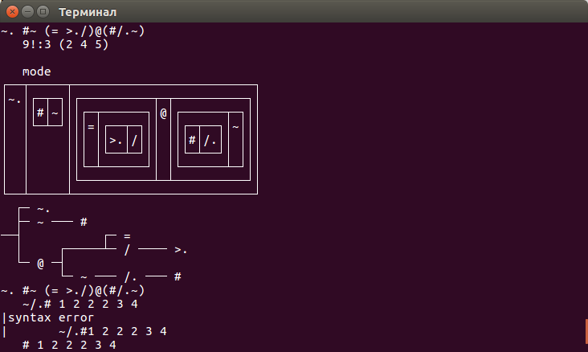
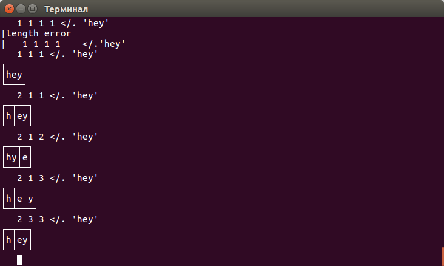

Знакомство с J
Как найти моду в языке J? Очень просто:
mode=: ~. #~ ( = >./ )@( #/.~ )
mode 1 1 2 2 3 3 4 4 4 5 5 6 6 7 8 8 9 9 0 0 0Как это работает? Давайте разберёмся.
Для начала установим глобальную переменную вывода, чтобы мы могли видеть все предложение в форме коробок (2), дерева(4) и строки(5).
9!:3 (2 4 5)Теперь выводится следующее.

Это дерево показывает, что будет происходить с нашими данными.
В отличие от других языков, здесь операторы, работающие с данными, принято называть глаголами. И это не блажь, а действительно необходимое разделение. Глагол применяется к данным, но есть различные операторы, которые могут его модифицировать. Если глагол применяется к одному параметру, то его называют моноидным, если к двум - диадным.
На картинке изображена вилка, которая применит наши данные сначала к левой части, затем к правой, и после этого проделает над ними операцию посередине.
Если попробовать раскрыть, то выглядеть это будет так:
(~. y) ~# ((=>./)@(#/.~) y)Первым идёт оператор Nub (~.), который проходится по списку и выбирает в нём только уникальные значения.
9 9 9 3 1 1 0 становится 9 3 1 0
#/.~Это предложение вернет нам 3 1 2 1
Что же происходит?
/. это глагол, диадная форма которого применяет стоящую перед ним команду для всей группы одинаковых ключей, стоящих под оператором. Например, глагол < запаковывает данные в так называемою коробку. Посмотрите на этот скриншот, чтобы понять, как всё работает.

Мы же применяем глагол #, который просто возвращает количество элементов.
Получается, мы группируем наш начальный массив в разные массивы, где каждый содержит одинаковые числа, и берём у каждой группы её размер.
Вау.
Как я узнал, что мы группируем сами с собой? Для этого служит тильда, она указывает в своем моноидном варианте, что мы будем применять глаголы к тому, что приходит к ним.
Глагол atop @ показывает нам, опять же, очередность, т.е. сначала со всем списком будут работать вторые скобки, а уже его результат используют первые.
Сначала мы делаем #/.~ c каждым элементом, а уже у полученного делаем =>./ на весь список.
Перейдем ко второй скобке.
Тут слэш / говорит, что нам необходимо применить диаду. стоящую перед ним, ко всему списку. По сути, это обычный цикл (reduce), который идет по всему массиву и делает оператор с текущим и следующим значением до конца; в нашем случае это >., который в других языках был бы просто знаком “больше”. Знак =, который сравнивает в нашем случае взятый массив и наибольшее значение, полученное с помощью прошлого глагола. Вся эта цепочка возвращает 1 0 0 0.
Мы дошли до такой формы.
9 3 1 0 #~ 1 0 0 0Тильда в данном случае говорит поменять местами параметры. А # - копировать нужное количество раз заданное.
Самое главное - понять, что в этом языке есть вилки, поезда и крюки, и тогда идеи языка начинают раскрываться и становятся понятнее.
Главное отличие от остальных языков в том, что любые операторы, образующие программу, могут принимать либо один, либо два параметра. Из-за этого появляются такие операторы, как связывание (&), которое просто привязывает данные к оператору, или [ и ], который берет данные с прошлого входа.
Как я понимаю, лучше всего этот язык изучать, играя с компилятором. В одной руке - словарь языка, в другой - идея чего мы хотим получить. Это всё напоминает старое хакерство, где за каждым поворотом ждет загадка.
Язык J интереснее учить именно разбирая чужие программы и заглядывая в справочники на сайте. Просто чтение примеров и текста не несёт и толики того удовольствия, если вы берете чужой код и смотрите как он работает, формулируя это сами.
Очередности и перестановки спрятаны в операторах языка, поэтому неподготовленный программист просто не сможет их считать. А очередность и место подстановки для этого языка - одно из важных вещей для написания правильных программ.
Надеюсь, вы, как и я, получите удовольствие от изучения этого языка.